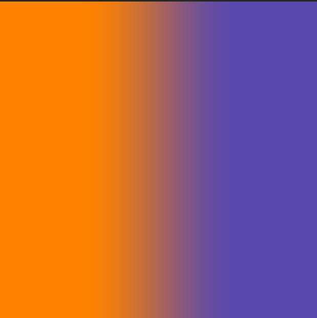

Shader Learning Process
Introductions to Shaders
#ifdef GL_ES
precision mediump float;
#endif
uniform vec2 u_resolution;
uniform vec2 u_mouse;
uniform float u_time;
void main() {
vec2 st = gl_FragCoord.xy / u_resolution.xy;
st.x *= u_resolution.x/u_resolution.y;
// Base color of some sort
vec3 color = vec3(st.x,st.y,abs(sin(u_time)));;
// some kind of value:
// (1) Linear: st.x
// (2) Linear: st.y - st.x
// (3) curve: st.y * st.x
float x_val = abs(smoothstep(0.2, 0.5, st.y * st.x)) ;
color = color + (sin(u_time + (x_val)) ) ;
gl_FragColor = vec4(color, 1.0);
}
Result: Is some kind of animation

Basic Shader Drawing
/**
*/
void main() {
vec2 st = gl_FragCoord.xy / u_resolution.xy;
vec3 color = vec3(0.0);
color = vec3(st.xx, 0.0); // using swizzle
gl_FragColor = vec4(color, 1.0);
}
void main() {
vec2 st = gl_FragCoord.xy / u_resolution.xy;
vec3 color = vec3(st.xy, 0.0);
gl_FragColor = vec4(color, 1.0);
}
Draw some graph of sort
void main() {
vec2 st = gl_FragCoord.xy / u_resolution.xy;
vec3 color = vec3(0.0);
//when value is < 0.5 = 0, value > 0.5 = 1
//The boundary is 0.5(a constant) along x axis
float x = step(0.5, st.x);
//when you do it like this plot an equation in boundary,
//: Graph of x against y - diagonal
float x1 = step(st.x, st.y);
// Graph of x*x against y - a curve
float x2 = step(st.x * st.x , st.y);
color = vec3(x2);
gl_FragColor = vec4(color, 1.0);
}
Explaining Fract


More code to support:
#ifdef GL_ES
precision mediump float;
#endif
uniform vec2 u_resolution;
void main() {
vec2 st = gl_FragCoord.xy / u_resolution.xy;
vec3 color = vec3(0.0);
color.rb = abs( 2.0 * fract(vec2(st.x) * 5.0) - 1.0);
gl_FragColor = vec4(color, 1.0);
}
Result:

Mixing shaders
Example 1 : Mixing with sin waves
#ifdef GL_ES
precision mediump float;
#endif
uniform vec2 u_resolution;
uniform float u_time;
vec3 colorA = vec3(1.000,0.511,0.000);
vec3 colorB = vec3(0.348,0.282,0.680);
void main() {
vec2 st = gl_FragCoord.xy / u_resolution.xy;
vec3 color = vec3(0.0);
// use mix_val values between 0 and 1.0 to mix
float mix_val = abs(sin(u_time));
color = mix(colorA, colorB, mix_val);
gl_FragColor = vec4(color, 1.0);
}
The Result is a continuous mixture between the two colors
Example 2 : mixing with step function
vec3 colorA = vec3(1.000,0.511,0.000);
vec3 colorB = vec3(0.348,0.282,0.680);
void main() {
vec2 st = gl_FragCoord.xy / u_resolution.xy;
vec3 color = vec3(0.0);
color = mix(colorA, colorB, step(0.5, st.x));
gl_FragColor = vec4(color, 1.0);
}
Example 3: mixing with smoothstep
vec3 colorA = vec3(1.000,0.511,0.000);
vec3 colorB = vec3(0.348,0.282,0.680);
void main() {
vec2 st = gl_FragCoord.xy / u_resolution.xy;
vec3 color = vec3(0.0);
color = mix(colorA, colorB, smoothstep(0.25, 0.75, st.x));
gl_FragColor = vec4(color, 1.0);
}

Example 4: A little more complex mix
define PI 3.14159265359
uniform vec2 u_resolution;
uniform vec2 u_mouse;
uniform float u_time;
vec3 colorA = vec3(0.149,0.141,0.912);
vec3 colorB = vec3(1.000,0.833,0.224);
void main() {
vec2 st = gl_FragCoord.xy/u_resolution.xy;
vec3 color = vec3(0.0);
vec3 pct = vec3(st.x);
float exp_val = abs(exp((st.x * st.y ) - 0.5));
// Use different value to change the value of rb
pct.r = abs(sin(u_time));
pct.b = abs(fract(exp_val * 5.0) - 1.0);
color = mix(colorA, colorB, pct);
gl_FragColor = vec4(color,1.0);
}
SHADER VOCAB
This section is dedicated to this like spontaneous discovery or some form of beautiful mistake of some sort.